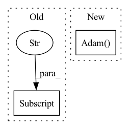

Pattern ID :17239

Before Change
out["ratio_0"] = (ratio_sign_0 + 1)/2
out["ratio_end"] = ((np.mean(torch.sign(ws_layer.forward_sign).detach().cpu().numpy())) + 1) / 2
out["mu0"] = mu0.numpy()
out["r0"] = r0.numpy()
out["tau0"] = tau0.numpy()
out["tau"] = ws_layer.tau.detach().numpy()
out["x_pred"] = torch.squeeze(x_pred).detach().numpy().T
After Change
regularisation = ExecRatioTargetRegularization(ws_layer.get_sign_parameters(), exec_target_ratio=0.8)
optimizer = torch.optim.AdamW(model.parameters(), lr=learning_rate, maximize=True, weight_decay=0.01)
optimizer_reg = torch.optim.Adam(regularisation.parameters(), lr=5e-3)
criterion = nn.MSELoss()
checkpoint_manager = nt.CheckpointManager(
checkpoint_folder,
In pattern: SUPERPATTERN
Frequency: 3
Non-data size: 2
Instances
Fragment ID: 57366179
Project Name: neurotorch/neurotorch
Commit Name: a19976d80f57c54d66a936925f12b6f25f452bb8
Time: 2022-09-28
Author: 50332514+JeremieGince@users.noreply.github.com
File Name: tutorials/time_series_forecasting_wilson_cowan/main_dale.py
M Class Name: AnonimousClass
N Class Name: AnonimousClass
M Method Name: train_with_params(20)
N Method Name: train_with_params(20)
M Parent Class:
N Parent Class:
M File Name: tutorials/time_series_forecasting_wilson_cowan/main_dale.py
N File Name: tutorials/time_series_forecasting_wilson_cowan/main_dale.py
M Start Line: 45
M End Line: 152
N Start Line: 51
N End Line: 168
'>
Before Change
loader["train"] = TrainDataLoader(train_dataset, batch_size=args.batch_size, shuffle=True)
loader["valid"] = TrainDataLoader(valid_dataset, batch_size=args.batch_size, shuffle=False)
for mixture, sources in loader["train"]:
print(mixture.size(), sources.size())
raise ValueError("Stop")
After Change
if args.optimizer == "sgd":
optimizer = torch.optim.SGD(model.parameters(), lr=args.lr, weight_decay=args.weight_decay)
elif args.optimizer == "adam":
optimizer = torch.optim.Adam(model.parameters(), lr=args.lr, weight_decay=args.weight_decay)
elif args.optimizer == "rmsprop":
optimizer = torch.optim.RMSprop(model.parameters(), lr=args.lr, weight_decay=args.weight_decay)
else:
raise ValueError("Not support optimizer {}".format(args.optimizer))
'>
Fragment ID: 57366169
Project Name: tky823/dnn-based_source_separation
Commit Name: 4923e8361e1425356e840fe5bff2a1550c9e75d4
Time: 2020-09-12
Author: delta9guitar97@gmail.com
File Name: egs/librispeech/adanet/local/train.py
M Class Name: AnonimousClass
N Class Name: AnonimousClass
M Method Name: main(1)
N Method Name: main(1)
M Parent Class:
N Parent Class:
M File Name: egs/librispeech/adanet/local/train.py
N File Name: egs/librispeech/adanet/local/train.py
M Start Line: 59
M End Line: 65
N Start Line: 60
N End Line: 94
'>
Before Change
return loss
def configure_optimizers(self):
Optimizer = load_class(self.hparams["optimizer_config"]["class"])
return Optimizer(self.parameters(), **self.hparams["optimizer_config"]["args"])
After Change
return loss
def configure_optimizers(self):
return torch.optim.Adam(self.parameters(), lr=self.hparams.lr, weight_decay=self.hparams.weight_decay)
'>
Fragment ID: 57366174
Project Name: ashleve/lightning-hydra-template
Commit Name: 7fe01e22d3f149f61e7fcfe25230a18a7e3dd686
Time: 2021-01-18
Author: zalewski.ukas@gmail.com
File Name: project/src/models/mnist_model.py
M Class Name: LitModelMNIST
N Class Name: LitModelMNIST
M Method Name: configure_optimizers(1)
N Method Name: configure_optimizers(1)
M Parent Class: pl.LightningModule
N Parent Class: pl.LightningModule
M File Name: project/src/models/mnist_model.py
N File Name: project/src/models/mnist_model.py
M Start Line: 76
M End Line: 77
N Start Line: 75
N End Line: 75